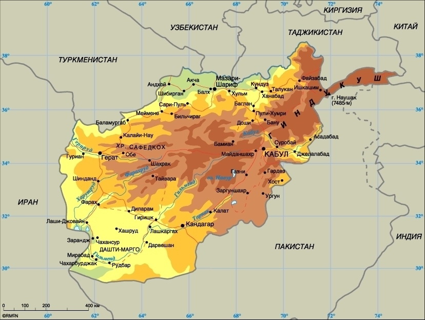

Афганистан
Афганская война началась в 1979 году и длилась на протяжении 10 лет. Этот вооруженный конфликт на территории Республики Афганистан был спровоцирован иностранной интервенцией во внутриполитический кризис страны. С одной стороны, выступали союзные войска, а с другой - мусульманско-афганское сопротивление. Решение о вводе советских войск было принято в конце 1979 года. Фактически, в стране разгоралась гражданская война, в которую вмешались и другие страны.
Советские войска входили в ДРА (Демократическую Республику Афганистан) по нескольким направлениям. Десант высаживался как в Кабуле, так и в Кандагаре и Баграме. Во время осады Кабула скончался президент страны. Некоторые мусульманские группировки, в частности моджахеды, были недовольны появлением советских солдат. Под их предводительством в Афганистане начались народные волнения и восстания. Моджахедам (душманам) в ходе вооруженного конфликта, в основном, помогали Пакистан и США. Также были задействованы некоторые европейские страны из альянса НАТО.
В первый год сопротивления советское командование надеялось получить хоть какую-то поддержку от кабульских войск, но те были слишком ослаблены массовым дезертирством. Вооруженные силы СССР в ходе этой войны носили название Ограниченный контингент. Им удалось контролировать ситуацию в ключевых городах Афганистана на протяжении нескольких лет, тогда как повстанцы оккупировали близлежащие сельские пространства. С 1980 по 1985 год на территории страны шли широкомасштабные боевые действия, в которых были задействованы не только советские, но и афганские соединения. Благодаря высокой мобильности, мятежникам удавалось избежать вертолетных и танковых атак.
С 1985 по 1986 год советская авиация совместно с артиллерией поддерживала афганские войска. Велась активная борьба с группировками, доставляющими оружие и боеприпасы из-за рубежа. В 1987 году по инициативе афганского руководства началась операция по национальному примирению, а через год советские войска начали подготовку к возвращению на родину. Весной 1988 года страны-участники афганского конфликта подписали Женевское соглашение, согласно которому советские войска должны были покинуть страну до 1989 года, а США и Пакистан обязались прекратить военную поддержку моджахедов.
В результате этого ожесточенного многолетнего конфликта, по некоторым данным, пострадало более 1 млн. человек. Режим нового президента ДРА М. Наджибуллы недолго просуществовал без поддержки советских войск, так как он был свергнут командирами исламских радикальных группировок.